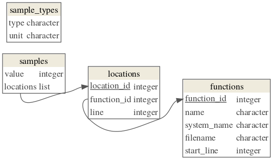

The data format is stable between major releases. In case of major updates, compatibility functions will be provided.
The validate_profile() function checks a profile data object
for compatibility with the specification.
Versioning information embedded in the data is considered.
The dm_from_profile() function converts a profile to a dm object.
The dm package must be installed.
See dm::dm() for more information.
validate_profile(x)
dm_from_profile(x)Profile data, e.g., as returned by read_pprof() or read_rprof().
The profile data is stored in an object of class "profile_data",
which is a named list of tibble::tibbles.
This named list has the following components, subsequently referred to as
tables:
meta
sample_types
samples
locations
functions
(Components with names starting with a dot are permitted
after the required components, but will be ignored.)
The meta table has two character columns, key and value.
Additional columns with a leading dot in the name are allowed
after the required columns.
It is currently restricted to one row with key "version" and a value
that is accepted by package_version().
The sample_types table has two character columns, type and unit.
Additional columns with a leading dot in the name are allowed
after the required columns.
It is currently restricted to one row with values "samples" and "count",
respectively.
The samples table has two columns, value (integer) and locations
(list).
Additional columns with a leading dot in the name are allowed
after the required columns.
The value column describes the number of consecutive samples for the
given location, and must be greater than zero.
Each element of the locations column is a tibble with one integer column,
location_id.
For each location_id value a corresponding observation in the locations
table must exist.
The locations are listed in inner-first order, i.e., the first location
corresponds to the innermost entry of the stack trace.
The locations table has three integer columns, location_id,
function_id, and line.
Additional columns with a leading dot in the name are allowed
after the required columns.
All location_id values are unique.
For each function_id value a corresponding observation in the functions
table must exist. NA values are permitted.
The line column describes the line in the source code this location
corresponds to, zero if unknown. All values must be nonnegative.
NA values are permitted.
The functions table has five columns, function_id (integer),
name, system_name and file_name (character), and start_line (integer).
Additional columns with a leading dot in the name are allowed
after the required columns.
All function_id values are unique.
The name, system_name and filename columns describe function names
(demangled and mangled), and source file names for a function.
Both name and system_name must not contain empty strings.
The start_line column describes the start line of a function in its
source file, zero if unknown. All values must be nonnegative.

rprof_file <- system.file("samples/rprof/1.out", package = "profile")
ds <- read_rprof(rprof_file)
validate_profile(ds)
bad_ds <- ds
bad_ds$samples <- NULL
try(validate_profile(bad_ds))
#> Error in validate_profile(bad_ds) :
#> identical(undotted(names(x)), c("meta", "sample_types", "samples", .... is not TRUE
dm <- dm_from_profile(ds)
print(dm)
#> ── Metadata ────────────────────────────────────────────────────────────────────
#> Tables: `samples`, `locations`, `functions`, `samples_locations`
#> Columns: 13
#> Primary keys: 3
#> Foreign keys: 3
dm::dm_draw(dm)